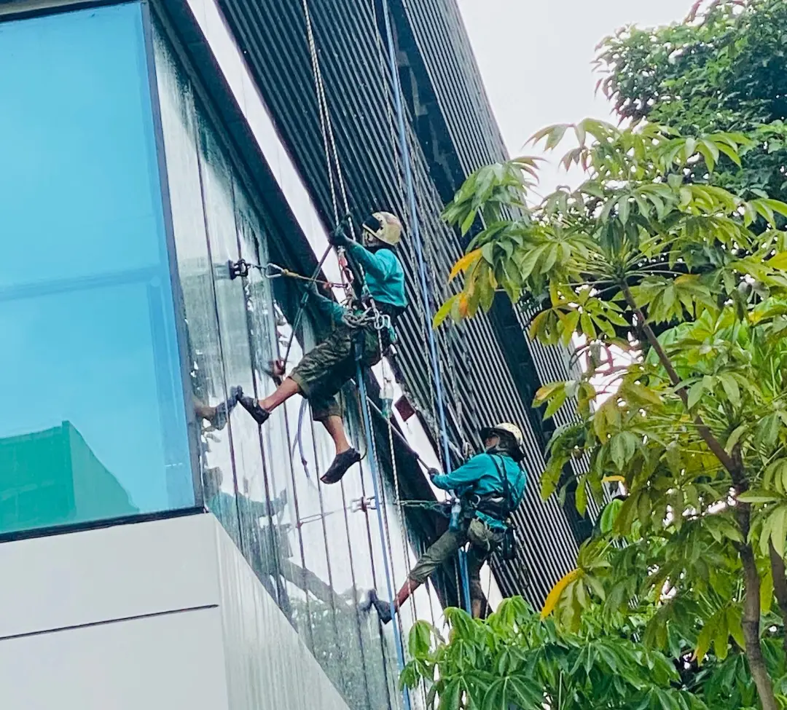
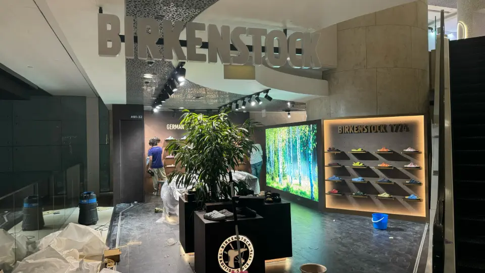
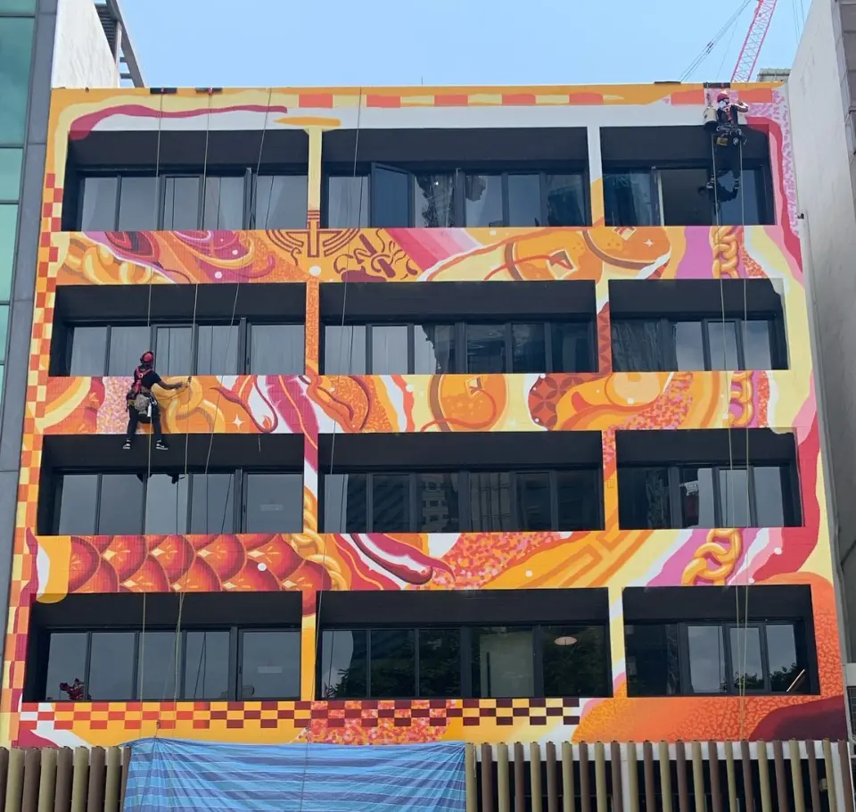

Homes, kitchens and whole buildings, cleaned properly.
Jia 家 Cleaning Services is a family-run cleaning company and NEA-approved vendor in Singapore. We take on everything from post-renovation dust in a flat to grease in a restaurant’s exhaust duct to the glass on the outside of a building.
Open 24 hours, including emergency cleaning

- NEA-approved vendor
- bizSAFE Level 3
- Family-run business
- Open 24 hours for urgent jobs
What needs cleaning?
For your home
Whether you’re dealing with post-renovation dust or handing your home over to its next owner, we clean every corner and fit the job to what you need. We also do light repairs, painting and aircon servicing, so one call covers it.
Get a quote for my homePost-renovation cleaning
Renovation leaves dust, debris and stubborn residue behind. We clean every surface from floor to ceiling, so you can move in without the mess.
Ask about post-renovation cleaningEnd-of-tenancy cleaning
Moving out is tiring enough. We clean every room and tackle built-up stains and grime, so you can get your deposit back or hand over a home that’s ready for the next tenant.
Ask about end-of-tenancy cleaningEmergency cleaning
Spills, stains, broken glass, a last-minute clean-up. We come quickly and put things back in order.
Ask about emergency cleaningSpot and stain restoration
Tough stains on carpets, upholstery and other surfaces, from spills to rust, treated to bring them back to their original freshness.
Ask about stain removalChandelier cleaning
We clean each crystal and fitting by hand and take care with the delicate parts, so your chandelier lights the room properly again.
Ask about chandelier cleaningFloor scrubbing and polishing
Dull, worn floors brought back to their natural lustre and smooth finish, in the living room, hallway or bedroom.
Ask about floor polishingUpholstery cleaning
Mattresses, sofas, curtains and carpets hold dust, stains and odours. We use specialised equipment to lift the dirt and allergens safely.
Ask about upholstery cleaningPainting
From a few touch-ups to a whole new look, a smooth finish that brings warmth back to your walls.
Ask about paintingHandyman and contractor work
Furniture assembly, replacing lights, patching damaged walls. Handy before a move-in or move-out.
Ask about handyman workPond and water feature cleaning
Fish ponds, fountains and garden water features: we clear out waste, clean the filters and restore the water’s clarity.
Ask about pond cleaningPressure jetting (soft wash)
Driveways and patios cleaned of dirt and algae with professional equipment, without damaging the surface, and with traction restored.
Ask about pressure jettingAircon servicing
We clean filters, unclog pipes and clear mould and dust, for better cooling, cleaner air and lower bills.
Ask about aircon servicing
For your business
Offices, shops, showrooms and commercial kitchens. Regular upkeep or a deep clean, so the place is pleasant for your staff and your customers.
Get a quote for my business
Kitchen exhaust duct cleaning and maintenance
Built-up grease in an exhaust system is a fire risk and causes odours. We remove it so your ventilation works properly and your kitchen runs safely.
Ask about kitchen exhaust duct cleaningKitchen cleaning
Grease, food residue and bacteria-prone spots, from prep areas to stoves. A clean kitchen is about food safety and compliance, not just looks.
Ask about commercial kitchen cleaningScheduled maintenance cleaning
Regular cleaning on a schedule, so the workspace stays presentable and you can get on with your work.
Ask about maintenance cleaningHigh-level dusting
Ceilings, light fittings and other high surfaces kept free of dust and allergens. Suits offices, showrooms and shops.
Ask about high-level dustingRetail and showroom cleaning
Displays kept spotless, floors cared for and high-traffic areas deep-cleaned. First impressions count.
Ask about retail cleaningFloor deep cleaning and polishing
Foot traffic dulls marble and parquet. Our polishing restores a sleek finish and helps the floor last.
Ask about floor polishing (commercial)Upholstery and carpet cleaning
Office chairs, carpets and upholstered furniture cleaned with specialised equipment to remove dirt, stains and odours.
Ask about office upholstery cleaningPressure jetting (soft wash)
A gentle but effective wash for pathways and facades that removes dirt, algae and stains without damaging surfaces.
Ask about pressure jetting (commercial)Painting
Interior and exterior painting for offices, shops and restaurants, done quickly and cleanly to keep disruption low.
Ask about commercial painting
For industrial sites
Heavy-duty cleaning that keeps facilities safe, compliant and in good condition: grease, dirt and debris dealt with, so operations run smoothly.
Get a quote for my site
Industrial kitchen exhaust duct cleaning
In large kitchens, grease in the exhaust system is a serious fire risk. Our industrial-grade cleaning removes it, improves airflow and keeps you within safety standards.
Ask about industrial kitchen exhaust cleaningExhaust duct auditing and inspection
We inspect the system, find fire hazards and cleanliness problems, and help you stay compliant with safety regulations.
Ask about exhaust duct inspectionFacade cleaning and pressure jetting
Pollution and grime dull a building over time. Cleaning the facade restores its look and protects it from long-term damage.
Ask about facade cleaningRoof cleaning
Moss, algae and debris removed to prevent structural damage and leaks, and to keep the building looking its best.
Ask about roof cleaningShip cleaning
Cabins, common areas and controls cleaned, for a fresh and hygienic space for crew and passengers.
Ask about ship cleaningIndustrial painting
For factories and warehouses: durable paints that stand up to heat and moisture, from walls to structural steel, applied to regulatory standards.
Ask about industrial painting
Kitchen exhaust is our speciality.
Hoods, ducts and fans: degreased, inspected and maintained. Our technicians also handle maintenance, repairs and modifications to exhaust systems, for restaurants, industrial kitchens, and the ventilation in buildings and car parks.
We work with restaurant owners, chefs, building managers and compliance officers, and give practical advice that keeps you within the regulations.
Ask about kitchen exhaustWe also clean where ladders can’t reach.
High-access exterior cleaning for glass, facades and atriums, plus chandeliers and high ceilings indoors. Tell us the building and the height, and we’ll plan the job.
Ask about high-access workRecent jobs
A selection of projects across homes, businesses and industrial sites.
-
Chandelier cleaning Nassim Road
-
Full kitchen exhaust duct cleaning Tanjong Rhu
-
Area cleaning Prive
-
Glass cleaning Orchard
Jia means home, and family.
Jia Cleaning Services is a family-run business in Singapore. Our cleaners and technicians have over five years of experience in the field, use proper equipment, and keep training so we can take on maintenance, repairs and modifications as well as cleaning.
We want long-term relationships with the people we clean for, built on being reliable and trustworthy.
Get a quote
Tell us what needs cleaning and where. Photos help us quote faster.
WhatsApp 8923 3871- Call
- 8923 3871
- Hours
- Open 24 hours
- Address
- 560 Ang Mo Kio Ave 10, Singapore 560457
- Jia Cleaning Services Singapore